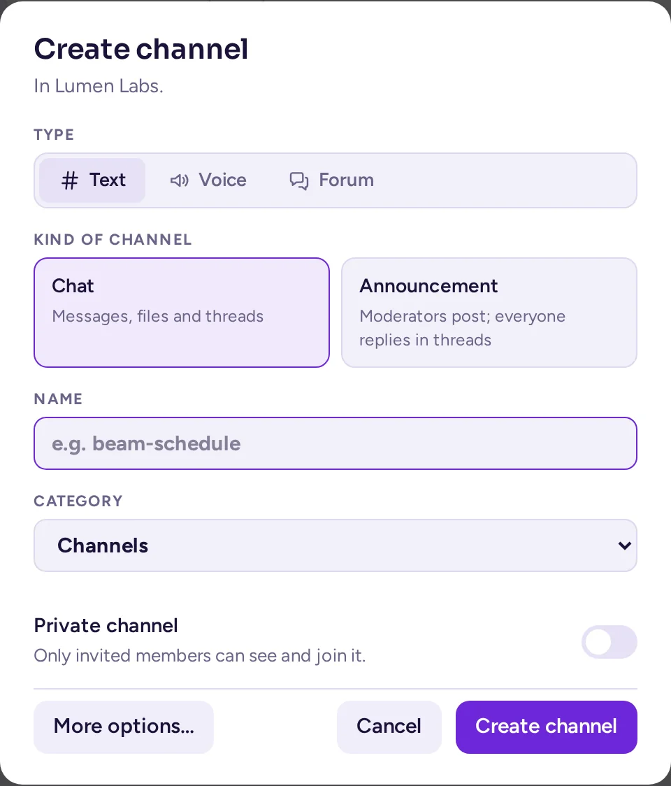
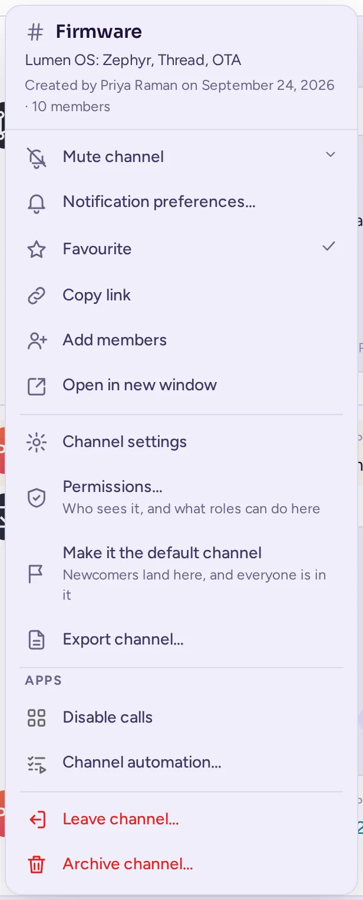
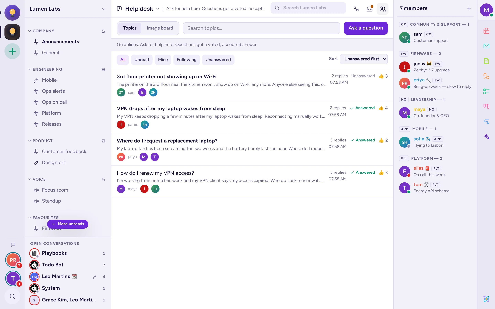
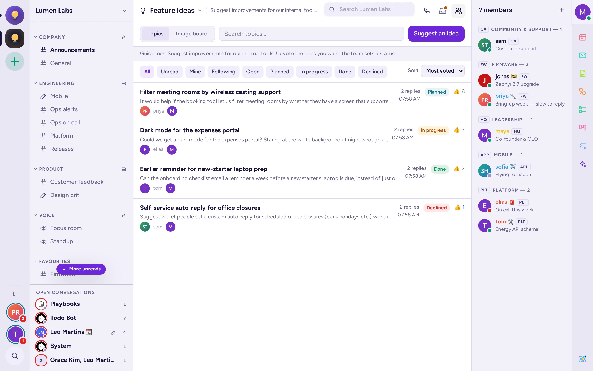
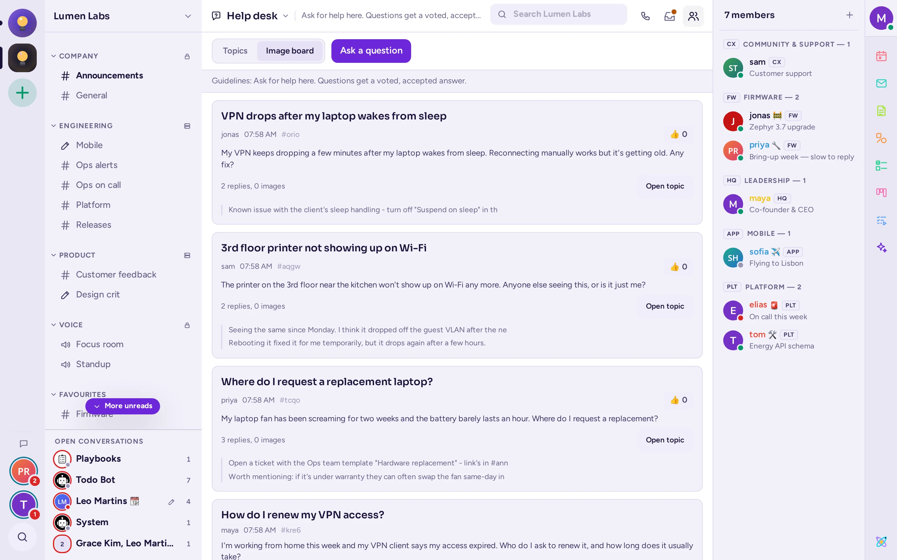

Κοινότητες και κανάλια
Οι κοινότητες περιέχουν κανάλια, και τα κανάλια περιέχουν συζητήσεις. Αυτή η σελίδα εξηγεί πώς να συμμετάσχετε σε αυτά, να διατηρείτε την πλευρική στήλη σας σε τάξη και να επικοινωνείτε απευθείας με τους χρήστες.
Κοινότητες
Μια κοινότητα είναι ένας χώρος με τα δικά της κανάλια και μέλη: η εταιρεία σας, μια τμήμα, ένα σύλλογο ή ένα δημόσιο έργο. Μπορείτε να ανήκετε σε πολλές κοινότητες στον ίδιο διακομιστή. Εμφανίζονται ως στρογγυλά εικονίδια στη ράβδο στην άκρη αριστερά του παραθύρου. Ένα σημείο σε ένα εικονίδιο σημαίνει μη αναγνωσμένα μηνύματα· ένας αριθμός μετρά τις αναφορές προς εσάς.
Εναλλαγή μεταξύ κοινοτήτων
Κάντε κλικ στο εικονίδιο μιας κοινότητας στη ράβδο. Το Antimatter ανοίγει το κανάλι στο οποίο ήσαστε τελευταία. Από το πληκτρολόγιο, πατήστε Ctrl+Alt+Down ή Up για την επόμενη ή προηγούμενη κοινότητα, ή Ctrl+Alt+1 έως 9 για τις πρώτες έως ενάτη (⌘+⌥ σε Mac).
Συμμετοχή σε άλλη κοινότητα
- Κάντε κλικ στο Προσθήκη ομάδας (το + κάτω από τα εικονίδια των ομάδων).
- Επιλέξτε Συμμετοχή σε άλλη ομάδα. Σε μια σελίδα εμφανίζονται οι ομάδες στις οποίες έχετε πρόσβαση.
- Επιλέξτε μία για να συμμετάσχετε.
Ορισμένες ομάδες μπορούν να συμμετεχούν μόνο με πρόσκληση: ζητήστε από ένα από τα μέλη ή τους διαχειριστές της έναν σύνδεσμο πρόσκλησης. Αν το σύστημα σας το επιτρέπει, το ίδιο μενού προσφέρει και τη Δημιουργία ομάδας.
Τη πρώτη φορά που ανοίγετε ορισμένες κοινότητες, ένα παράθυρο Καλώς ήρθατε σε … σας κάνει μερικές ερωτήσεις. Οι απαντήσεις σας σας δίνουν τους ρόλους και τα κανάλια που ταιριάζουν σε εσάς. Μπορείτε να το Παράλειψη.
Το μενού της κοινότητας
Κάντε κλικ στο όνομα της ομάδας στην κορυφή της πλευρικής στήλης ή κάντε δεξί κλικ στο εικονίδιό της στη γραμμή εργαλείων για να ανοίξει το μενού της. Ανάλογα με τα δικαιώματά σας, προσφέρει, από πάνω προς τα κάτω:
- Πρόσκληση χρηστών, όταν μπορείτε να προσκαλείτε.
- Ρυθμίσεις ομάδας, αν διαχειρίζεστε κάτι στην ομάδα. Διαφορετικά, Προβολή μελών και Ομάδες χρηστών… (οι ομάδες της κοινότητας, καθεμία με μια ετικέτα, έναν υπεύθυνο και ένα κανάλι).
- Οι ρόλοι σας…, όταν η κοινότητα έχει ρόλους που μπορεί να αναλάβει οποιονδήποτε: δίνουν χρώμα στο όνομά σας και μπορεί να σας επιτρέψουν να κάνετε περισσότερα.
- Το προφίλ σας στο <community>…: μια φωτογραφία, ένα ψευδώνυμο και ένα σήμα ομάδας που εμφανίζονται αντί για τα καθολικά σας σε αυτήν την κοινότητα (δείτε Το προφίλ σας σε μια κοινότητα).
- Δημιουργία καναλιού, Δημιουργία κατηγορίας και Περιήγηση καναλιών, για να βρείτε κανάλια στα οποία μπορείτε να συμμετάσχετε.
- Εμφάνιση μόνο μη αναγνωσμένων καναλιών (επίσης Ctrl+Shift+U) και Απόκρυψη καναλιών σε σίγαση, τα οποία εμφανίζουν ένα σημάδι επιλογής όταν είναι ενεργά.
- Όλα ως αναγνωσμένα (και Shift+Esc).
- Σίγαση ομάδας, η οποία σιγάζει όλες τις κατηγορίες της, και Ακύρωση σίγασης ομάδας.
- Ρυθμίσεις ειδοποιήσεων, οι οποίες ανοίγουν τις δικές της ρυθμίσεις ειδοποιήσεων για αυτήν την κοινότητα, και Ρυθμίσεις απορρήτου, τις δικές της επιλογές για άμεσα μηνύματα και λεπτομέρειες προφίλ (δείτε Ποιος μπορεί να σας στείλει μήνυμα).
- Οι ενέργειες των εφαρμογών και Προσθήκη σε φάκελο (μόνο από τη γραμμή εργαλείων, δείτε Φάκελοι κοινότητας).
- Αποχώρηση από την ομάδα.
Φάκελοι κοινοτήτων
Αν ανήκετε σε πολλές κοινότητες, μπορείτε να ομαδοποιήσετε τα εικονίδια τους σε φακέλους στη ράγα:
- Σύρετε το εικονίδιο μιας κοινότητας πάνω σε ένα άλλο για να τα τοποθετήσετε μαζί σε έναν φάκελο. Σύρετε εικονίδια προς τα πάνω ή προς τα κάτω για να τα αναδιατάξετε.
- Ή κάντε δεξί κλικ στο εικονίδιο μιας κοινότητας, επιλέξτε Προσθήκη σε φάκελο, και στη συνέχεια έναν φάκελο ή Νέος φάκελος με μια άλλη κοινότητα.
- Κάντε κλικ σε έναν φάκελο για να τον ανοίξετε ή να τον κλείσετε. Κάντε δεξί κλικ για Σήμανση φακέλου ως αναγνωσμένου, Ρυθμίσεις φακέλου (το Όνομα και το Χρώμα του) και Αφαίρεση φακέλου· οι ομάδες παραμένουν στη στήλη.
Οι φακέλοι είναι μόνο δικό σας: κανείς άλλος δεν τους βλέπει.
Αποχώρηση από κοινότητα
Επιλέξτε Αποχώρηση από την ομάδα από το μενού της και επιβεβαιώστε. Αποχωρείτε από όλα τα κανάλια της. Για να επιστρέψετε αργότερα, ενδέχεται να χρειαστείτε νέα πρόσκληση.
Κανάλια
Ένα κανάλι είναι μια συζήτηση για ένα θέμα, ανοιχτή στα μέλη της κοινότητας. Τα δημόσια κανάλια έχουν ένα # πριν από το όνομά τους· οποιονδήποτε μέλος της κοινότητας μπορεί να τα βρει και να συμμετάσχει σε αυτά. Τα ιδιωτικά κανάλια έχουν μια κλειδαριά και μόνο τα μέλη τους μπορούν να τα δουν. Τα φωνητικά κανάλια έχουν ένα ηχείο: δείτε Φωνητικά κανάλια.
Κάθε κοινότητα έχει ένα κανονικό κανάλι στο οποίο ανήκουν όλοι, που ονομάζεται Γενικό. Ορισμένες κοινότητες τοποθετούν όλους τους χρήστες σε όλα τα κανάλια τους.
Εύρεση και συμμετοχή σε κανάλια
- Ανοίξτε το μενού της κοινότητας και επιλέξτε Περιήγηση καναλιών.
- Πληκτρολογήστε στο Αναζήτηση καναλιών ή επιλέξτε έναν τύπο: Όλα, Δημόσιο, Ιδιωτικό, Αρχειοθετημένο ή Ζήτηση συμμετοχής. Επιλέξτε Απόκρυψη καναλιών που συμμετέχετε για να δείτε μόνο τα κανάλια στα οποία δεν συμμετέχετε.
- Κάντε κλικ στο Συμμετοχή δίπλα σε ένα κανάλι. Σε μια κοινότητα όπου τα μέλη βρίσκονται σε κάθε κανάλι, δεν υπάρχει κουμπί Συμμετοχή ή ετικέτα Συμμετοχή: είστε ήδη σε κάθε δημόσιο κανάλι.
Ορισμένα ιδιωτικά κανάλια μπορούν να βρεθούν αλλά όχι να συμμετέχουν απευθείας: κάντε κλικ στο Ζήτηση συμμετοχής για να στείλετε αίτημα στους διαχειριστές τους. Το κουμπί τότε αναγράφει Εστάλη αίτημα· κάντε κλικ ξανά για να ανακαλέσετε το αίτημά σας. Προστίθεστε όταν ένας διαχειριστής το αποδεχτεί.
Μπορείτε επίσης να συμμετάσχετε σε ένα κανάλι μέσω ενός συνδέσμου προς αυτό ή πληκτρολογώντας /join #channel-name.
Δημιουργία καναλιού
- Επιλέξτε Δημιουργία καναλιού από το μενού της κοινότητας, ή κάντε κλικ στο + δίπλα σε μια κατηγορία στην πλευρική στήλη.
- Επιλέξτε τον τύπο του καναλιού με τον διακόπτη Κείμενο, Φωνή και Forum, και στη συνέχεια μια κάρτα από κάτω: Συνομιλία ή Ανακοίνωση για κείμενο· Ομιλία ή Σκηνή για φωνή· Συζήτηση, Ερωτήσεις & Απαντήσεις, Ιδέες, Ανακοινώσεις ή Πίνακας εικόνων για forum. Το κείμενο κάτω από το όνομα κάθε κάρτας εξηγεί τι προσφέρει. Ο τύπος είναι σταθερός μόλις δημιουργηθεί το κανάλι. Μπορείτε ωστόσο να εναλλάσσετε τις κάρτες αυτού του τύπου αργότερα, στις ρυθμίσεις του καναλιού (δείτε Η καρτέλα Τύπος του καναλιού).
- Πληκτρολογήστε ένα Όνομα.
- Επιλέξτε την Κατηγορία στην οποία θα τοποθετηθεί.
- Ενεργοποιήστε το Ιδιωτικό κανάλι αν μόνο τα προσκλημένα μέλη πρέπει να το δουν.
- Κάντε κλικ στο Δημιουργία καναλιού.
Το Περισσότερες επιλογές… ανοίγει το πλήρες παράθυρο διαλόγου, με τη διεύθυνση και τον σκοπό του καναλιού. Το αν μπορείτε να δημιουργήσετε δημόσια ή ιδιωτικά κανάλια εξαρτάται από τις ρυθμίσεις της κοινότητάς σας. Η επιλογή Φωνή είναι απενεργοποιημένη, με την ένδειξη "Απαιτεί την εφαρμογή Φωνητικών καναλιών", έως ότου αυτή η εφαρμογή είναι ενεργή στον διακομιστή σας.

Ένα κανάλι κειμένου με προεπιλογή Ανακοίνωση εμφανίζει ένα ηχείο αντί του # στην πλευρική στήλη, στη θέση του # που χρησιμοποιείται συνήθως για τα κανάλια Συνομιλία. Ένα φόρουμ εμφανίζει φυσαλίδες ομιλίας στοιβαγμένες (ένα ερωτηματικό για Q&A, μια λάμπα για Ιδέες, μια στοίβα εικόνων για φόρουμ του οποίου η προεπιλεγμένη προβολή είναι ο πίνακας εικόνων). Ένα φωνητικό κανάλι διατηρεί το εικονίδιο του ηχείου.
Προσθήκη ατόμων σε κανάλι
Εάν έχετε τη δυνατότητα να διαχειριστείτε τα μέλη του καναλιού, επιλέξτε Προσθήκη μελών στο μενού του καναλιού. Αναζητήστε με όνομα ή @username, επιλέξτε άτομα και κάντε κλικ στο Προσθήκη. Τα άτομα αυτά θα δουν το ιστορικό του καναλιού και θα λάβουν ειδοποίηση.
Το μενού καναλιού
Κάντε κλικ στο όνομα του καναλιού στο πάνω μέρος της συνομιλίας για να ανοίξει το μενού του. Στην κορυφή εμφανίζεται ο σκοπός του καναλιού (ή αλλιώς η κεφαλίδα του), ποιος το δημιούργησε, πόσα μέλη έχει και η ένδειξη Αρχειοθετημένο όταν ισχύει αυτό. Στη συνέχεια, ανάλογα με τα δικαιώματά σας:
- Σίγαση καναλιού ή Ακύρωση σίγασης καναλιού (δείτε Σίγαση καναλιού).
- Προτιμήσεις ειδοποιήσεων… (δείτε Ειδοποιήσεις για ένα κανάλι), Αγαπημένο (τα αγαπημένα κανάλια μεταφέρονται στην κατηγορία ΑΓΑΠΗΜΕΝΑ), Αντιγραφή συνδέσμου, Προσθήκη μελών, Μετάφραση μηνυμάτων και Άνοιγμα σε νέο παράθυρο.
- Ρυθμίσεις καναλιού, Δικαιώματα…, Κάντε το προεπιλεγμένο κανάλι και Εξαγωγή καναλιού… (δείτε παρακάτω).
- Οι ενέργειες των εφαρμογών, κάτω από την ενότητα Εφαρμογές.
- Στο κάτω μέρος: Κατάργηση αρχειοθέτησης καναλιού, Κλείσιμο καναλιού, Αποχώρηση από κανάλι και Αρχειοθέτηση καναλιού….
Η κεφαλίδα δίπλα στο όνομα είναι ένα σύντομο κείμενο που ορίζουν τα μέλη του καναλιού. Κάντε κλικ στο Εμφάνιση ολόκληρης της κεφαλίδας εάν το κείμενο είναι περικομμένο. Τα κουμπιά της κεφαλίδας ανοίγουν τη λίστα μελών, καθώς και τα καρφιτσωμένα μηνύματα και τα αρχεία του καναλιού (δείτε Αναφορές, αποθηκευμένα και καρφιτσωμένα μηνύματα).
Η κεφαλίδα μπορεί επίσης να εμφανίζει Περιλαμβάνει επισκέπτες (οι επισκέπτες μπορούν να διαβάζουν και να δημοσιεύουν σε αυτό το κανάλι), Μεταφρασμένο, Περιορισμένο (μια πολιτική πρόσβασης καθορίζει ποιος μπορεί να συμμετέχει) ή ότι το κανάλι μοιράζεται με άλλα συστήματα.

Η λίστα μελών
Κάντε κλικ στη Λίστα μελών (τα δύο πρόσωπα στην πάνω δεξιά γωνία) για να εμφανίσετε ή να κρύψετε τα μέλη του καναλιού στα δεξιά. Ομαδοποιούνται κατά ρόλο και στη συνέχεια κατά κατάσταση σύνδεσης (σε σύνδεση ή εκτός σύνδεσης). Χρησιμοποιήστε την επιλογή Ομαδοποίηση μελών κατά για να τα ομαδοποιήσετε κατά Ρόλους ή Ομάδες, εκτός αν οι διαχειριστές της κοινότητάς σας έχουν επιλέξει την ομαδοποίηση για όλους. Χρησιμοποιήστε τον φίλτρο για να εμφανίσετε άτομα με συγκεκριμένο χαρακτηριστικό, όπως τοποθεσία. Κάντε κλικ σε ένα άτομο για να δείτε την κάρτα προφίλ του ή κάντε δεξί κλικ για το μενού του. Αν η Απλοποιημένη διεπαφή είναι ενεργοποιημένη (βλ. Προσβασιμότητα), η λίστα μελών παραμένει κλειστή μέχρι να την ανοίξετε.
Αποχώρηση από κανάλι
Επιλέξτε Αποχώρηση από κανάλι στο μενού του καναλιού και στη συνέχεια επιβεβαιώστε. Μπορείτε να συμμετάσχετε ξανά σε ένα δημόσιο κανάλι μέσω της Περιήγησης καναλιών. Για ένα ιδιωτικό κανάλι, πρέπει να προστεθείτε ξανά. Δεν μπορείτε να αποχωρήσετε από το προεπιλεγμένο κανάλι της κοινότητας. Σε μια κοινότητα όπου όλοι βρίσκονται σε όλα τα κανάλια, δεν υπάρχει η επιλογή Αποχώρηση από κανάλι: η Σίγαση καναλιού εξηγεί τον λόγο.
Αρχειοθέτηση καναλιού
Η αρχειοθέτηση ενός καναλιού τερματίζει τη συνομιλία του, αλλά διατηρεί το ιστορικό του. Αν έχετε δικαίωμα, επιλέξτε Αρχειοθέτηση καναλιού… στο μενού του καναλιού ή Αρχειοθέτηση καναλιού στις ρυθμίσεις του. Σε μια κοινότητα που έχει ρυθμιστεί ως χώρος εργασίας, μπορείτε να αρχειοθετήσετε τα κανάλια για τα οποία είστε διαχειριστής, όπως αυτά που δημιουργήσατε· σε άλλες κοινότητες, μόνο οι διαχειριστές της κοινότητας και οι ρόλοι που διαχειρίζονται κανάλια μπορούν να το κάνουν.
Ένα αρχειοθετημένο κανάλι μπορεί ακόμα να διαβαστεί, αλλά κανείς δεν μπορεί να δημοσιεύσει, να αντιδράσει ή να καρφιτσωσει σε αυτό. Οι διαχειριστές του μπορούν ακόμα να προσθέσουν άτομα σε αυτό, για παράδειγμα κάποιον που χρειάζεται να διαβάσει το ιστορικό του. Επιλέξτε Κλείσιμο καναλιού στο μενού του για να αποχωρήσετε από αυτό.
Οργάνωση της πλευρικής στήλης
Η πλευρική στήλη εμφανίζει τα κανάλια της τρέχουσας κοινότητας σε κατηγορίες. Ορισμένες κατηγορίες ορίζονται από τους διαχειριστές της κοινότητας για όλους. Οι υπόλοιπες είναι δικές σας και τις βλέπετε μόνο εσείς.
Το μενού καναλιού
Τοποθετήστε τον δείκτη σε ένα κανάλι και κάντε κλικ στο Επιλογές καναλιού (⋯) ή κάντε δεξί κλικ σε αυτό. Το μενού περιέχει τις ίδιες ενέργειες με το μενού του καναλιού (δείτε Το μενού του καναλιού), με την ίδια σειρά, και τρεις δικές του:
- Σήμανση ως αναγνωσμένο ή Σήμανση ως μη αναγνωσμένο, πρώτα.
- Μετακίνηση σε…: τοποθετήστε το κανάλι σε άλλη κατηγορία, είτε σε μία από τις Οι δικές σας, είτε σε μία Για όλους αν είστε διαχειριστής.
- Απόκρυψη μέχρι να υπάρξουν νέα μηνύματα: το κανάλι μεταφέρεται σε μια ενότητα Κρυμμένα στο τέλος της πλευρικής στήλης μέχρι να γράψει κάποιος σε αυτό. Το Εμφάνιση στην πλευρική στήλη το επαναφέρει.
Κατηγορίες
- Για να δημιουργήσετε μία, επιλέξτε Δημιουργία κατηγορίας στο μενού της κοινότητας, πληκτρολογήστε ένα Όνομα και κάντε κλικ στο Δημιουργία κατηγορίας.
- Σύρετε κανάλια από μία κατηγορία σε άλλη, ή εντός μιας κατηγορίας για να τα αναδιατάξετε. Σύρετε και τις κατηγορίες για να τις αναδιατάξετε.
- Κάντε κλικ στο όνομα μιας κατηγορίας για να τη συρρικνώσετε ή να την αναπτύξετε.
- Κάντε κλικ στις Επιλογές κατηγορίας (⋯) δίπλα στο όνομά της για να Μετονομάσετε κατηγορία, να Διαγράψετε κατηγορία (τα κανάλια της επιστρέφουν στις προεπιλεγμένες κατηγορίες), να Σιγάσετε κατηγορία, να Σηματίσετε κατηγορία ως αναγνωσμένη, να Ταξινομήσετε τα κανάλια της (Αλφαβητικά, Κατά πρόσφατη δραστηριότητα ή Χειροκίνητα), να Μετακινήσετε προς τα πάνω ή προς τα κάτω, ή να Δημιουργήσετε νέα κατηγορία.
Οι κατηγορίες που έχουν ρυθμιστεί από τους διαχειριστές το αναφέρουν όταν δείχνετε το ποντίκι στο όνομά τους. Όταν μια τέτοια κατηγορία είναι Κλειδωμένη, τα κανάλια της παραμένουν σε αυτήν.
Μη αναγνωσμένα κανάλια
- Ένα κανάλι με μη αναγνωσμένα μηνύματα εμφανίζεται με έντονη γραμμή· ένας αριθμός μετρά τις αναφορές σας.
- Όταν τα μη αναγνωσμένα κανάλια βρίσκονται εκτός οπτικού πεδίου, εμφανίζεται ένα κουμπί Περισσότερα μη αναγνωσμένα στην κορυφή ή στο κάτω μέρος της λίστας: κάντε κλικ σε αυτό για να μετακινηθείτε σε αυτά.
- Ενεργοποιήστε το Ομαδοποίηση μη αναγνωσμένων καναλιών στις Ρυθμίσεις › Εμφάνιση για να τα συγκεντρώσετε σε μια ενότητα Μη αναγνωσμένα πάνω από τις κατηγορίες.
- Πατήστε Ctrl+Shift+U ή επιλέξτε Εμφάνιση μόνο μη αναγνωσμένων καναλιών στο μενού της κοινότητας, για να δείτε μόνο τα μη αναγνωσμένα κανάλια· κάντε κλικ στο Εμφάνιση όλων για να τα δείτε όλα ξανά.
- Τα Alt+Up και Alt+Down μεταβαίνουν στο προηγούμενο ή επόμενο κανάλι· προσθέστε Shift για να μεταβείτε στο προηγούμενο ή επόμενο μη αναγνωσμένο.
Θέματα
Οι θεματικές ενότητες, δηλαδή τα νήματα που κάποιος ονόμασε, εμφανίζονται κάτω από το κανάλι τους στην πλευρική στήλη για όλους τους συμμετέχοντες στο κανάλι, ανεξάρτητα από το αν το παρακολουθούν, αρκεί να ήταν ενεργές εντός της περιόδου Θεματικές ενότητες κάτω από ένα κανάλι (δείτε Θέματα και εμφάνιση)· αν τις παρακολουθείτε, εμφανίζεται επίσης και ο αριθμός των νέων απαντήσεων. Κάντε κλικ σε μία για να την ανοίξετε. Ένα ανώνυμο νήμα με νέες απαντήσεις εμφανίζεται μόνο για τα άτομα που το παρακολουθούν. Δείτε Μετατροπή νήματος σε θεματική ενότητα.
Εξαγωγή καναλιού
Επιλέξτε Εξαγωγή καναλιού… (ή Εξαγωγή συνομιλίας…) στο μενού για να κατεβάσετε τα μηνύματά του ως αρχείο CSV που μπορείτε να ανοίξετε σε φύλλο εργασίας: ποιος τα έγραψε, πότε και τις απαντήσεις τους. Επιλέξτε τα Μηνύματα που θέλετε να συμπεριληφθούν: Τελευταίες 30 ημέρες, Όλο το διάστημα ή Προσαρμοσμένες ημερομηνίες, και στη συνέχεια κάντε κλικ στο Εξαγωγή. Τα συνημμένα αναφέρονται με το όνομά τους, ενώ τα διαγραμμένα μηνύματα παραλείπονται. Ο διαχειριστής σας μπορεί να περιορίσει αυτή τη δυνατότητα μόνο στους διαχειριστές.
Κανάλια φόρουμ
Ένα κανάλι φόρουμ περιέχει θεματικές ενότητες αντί για μια συνηθισμένη συνομιλία: το άνοιγμά του εμφανίζει μια λίστα θεματικών ενοτήτων, χωρίς πλαίσιο μηνυμάτων στο κάτω μέρος.
Η προβολή θεματικών ενοτήτων
Κάθε γραμμή εμφανίζει τον τίτλο της θεματικής ενότητας, την πρώτη γραμμή της πρώτης ανάρτησής της (με μια μικρογραφία όταν υπάρχει εικόνα), τον συγγραφέα και έως τρία άλλα άτομα που απάντησαν, τις απαντήσεις και τη τελευταία δραστηριότητα, καθώς και, σε ένα φόρουμ Ερωτήσεις & Απαντήσεις, αν έχει απαντηθεί και τις ψήφους 👍 της, ή σε ένα φόρουμ Ιδεών, την κατάστασή της και τις ψήφους της.
- Ταξινόμηση κατά Τελευταία δραστηριότητα ή Νεότερα σε ένα φόρουμ Συζητήσεων ή Ανακοινώσεων· Χωρίς απάντηση, Νεότερα ή Περισσότερες ψήφοι σε Ερωτήσεις & Απαντήσεις· Περισσότερες ψήφοι, Νεότερα ή Κατάσταση σε Ιδέες.
- Φιλτράρετε με Όλα, Μη αναγνωσμένα, Δικά μου ή Παρακολουθείτε, και, σε Ερωτήσεις & Απαντήσεις, Χωρίς απάντηση, ή σε Ιδέες, μία μόνο κατάσταση.
- Αναζητήστε τις θεματικές ενότητες του φόρουμ με το δικό του πλαίσιο αναζήτησης.
Ο σκοπός του καναλιού, όταν υπάρχει, εμφανίζεται πάνω από τη λίστα ως οδηγός του φόρουμ. Οι θεματικές ενότητες που έχουν καρφιτσωθεί στην κορυφή του καναλιού (δείτε Καρφίτσωμα μηνύματος ή τοποθέτηση στην κορυφή) εμφανίζονται πρώτες.

Άνοιγμα θέματος
Το κουμπί πάνω από τη λίστα, Νέο θέμα, Κάντε μια ερώτηση ή Προτείνετε μια ιδέα, ανάλογα με το φόρουμ, ανοίγει μια φόρμα: έναν υποχρεωτικό Τίτλο (έως 100 χαρακτήρες), στη συνέχεια το συνηθισμένο πλαίσιο μηνύματος, με μορφοποίηση, συνημμένα και emoji. Βλέπετε αυτό το κουμπί μόνο εάν μπορείτε να ανοίξετε θέματα εκεί (βλ. Η καρτέλα Τύπος του καναλιού). Κάντε κλικ σε ένα θέμα για να το ανοίξετε: η πρώτη του ανάρτηση, στη συνέχεια οι απαντήσεις του, με ένα πλαίσιο απάντησης στο κάτω μέρος και έναν σύνδεσμο Όλα τα θέματα για επιστροφή.
Ερωταπαντήσεις και Ιδέες
Σε ένα φόρουμ Ερωταπαντήσεων, ο χρήστης που έκανε την ερώτηση ή ένας συντονιστής επιλέγει Αποδοχή απάντησης στο μενού Ενέργειες μηνύματος μιας απάντησης (το Αναίρεση αποδοχής απάντησης την αποκαθιστά). Το θέμα στη συνέχεια καρφιτσώνει αυτή την απάντηση κάτω από την ερώτηση, με τις υπόλοιπες απαντήσεις από κάτω, ταξινομημένες κατά ψήφους. Σε ένα φόρουμ Ιδεών, ένας συντονιστής ορίζει την κατάσταση ενός θέματος από το μενού Ενέργειες μηνύματος: Ορισμός κατάστασης › Άνοιγμα, Προγραμματισμένο, Σε εξέλιξη, Ολοκλήρωση ή Απορρίφθηκε. Κάντε κλικ στο 👍 μιας ερώτησης, μιας ιδέας ή μιας απάντησης για να ψηφίσετε υπέρ της. Οι δικές σας αναρτήσεις δεν έχουν κουμπί ψήφου.

Η προβολή πίνακα εικόνων
Κάντε κλικ στο Πίνακας εικόνων, δίπλα στο Θέματα στην κορυφή του φόρουμ, για να το δείτε με αυτόν τον τρόπο: μια κυλιόμενη σελίδα με κάρτες, καθεμία με την πρώτη της εικόνα σε μεγάλο μέγεθος (μόνο το κείμενό της όταν η πρώτη ανάρτηση δεν έχει εικόνα), τον τίτλο, τον συγγραφέα, πόσο καιρό πριν ξεκίνησε, τις πρώτες γραμμές της πρώτης της ανάρτησης, τους αριθμούς των απαντήσεων και των εικόνων της, ένα κουμπί Άνοιγμα θέματος και τις τρεις τελευταίες απαντήσεις της από κάτω. Στα φόρουμ Ερωταπαντήσεων και Ιδεών, κάθε κάρτα έχει επίσης και κουμπί ψήφου. Η φόρμα για νέο θέμα ξεκινά με την περιοχή συνημμένων αντί για το πεδίο τίτλου, το οποίο εμφανίζεται αμέσως μετά.
Οι επιλογές Θέματα και Πίνακας εικόνων είναι δική σας επιλογή: οι ρυθμίσεις του καναλιού καθορίζουν ποια προβολή βλέπετε πρώτες όταν το ανοίγετε (βλ. Η καρτέλα Τύπος του καναλιού), αλλά η εναλλαγή μεταξύ τους εξαρτάται αποκλειστικά από εσάς.

Τα φόρουμ δεν εμφανίζουν τα θέματά τους κάτω από το κανάλι στην πλευρική στήλη, σε αντίθεση με τα ονομαστικά θέματα ενός καναλιού κειμένου: θα ήταν υπερβολικά πολλά. Ένα αποτέλεσμα αναζήτησης μέσα σε ένα φόρουμ εμφανίζει τον τίτλο του θέματος από πάνω του και ανοίγει το θέμα αντί για έναν μόνιμο σύνδεσμο.
Άμεσα και ομαδικά μηνύματα
Τα άμεσα μηνύματα είναι ιδιωτικές συνομιλίες μεταξύ εσάς και ενός άλλου ατόμου, ενώ τα ομαδικά μηνύματα περιλαμβάνουν έως και δέκα άτομα, εσάς συμπεριλαμβανομένου. Δεν ανήκουν σε καμία κοινότητα: η ίδια συνομιλία εμφανίζεται ανεξάρτητα από την κοινότητα στην οποία βρίσκεστε.
Εύρεση των συνομιλιών σας
Οι πρόσφατες συνομιλίες σας εμφανίζονται στη λίστα Ανοιχτές συνομιλίες στο κάτω μέρος της πλευρικής στήλης: πρώτα αυτή στην οποία βρίσκεστε, στη συνέχεια οι πιο πρόσφατες ενεργές, όσες χωράνε. Μια μη αναγνωσμένη συνομιλία έχει κόκκινο δαχτυλίδι γύρω από τη φωτογραφία της και έναν μικρό γκρι αριθμό. Για να τις δείτε όλες, κάντε κλικ στο Όλα τα άμεσα μηνύματα (ο φυσαλίδα συνομιλίας στο κάτω μέρος της κοινότητας). Η πλευρική στήλη τότε εμφανίζει όλες τις συνομιλίες, με τις πιο πρόσφατες πρώτες, μαζί με το τελευταίο μήνυμα. Περιλαμβάνει επίσης συνδέσμους προς τις Αναφορές, τα Παρακολουθούμενα νήματα, τα Αποθηκευμένα μηνύματα, τα Πρόχειρα, τα Προγραμματισμένα μηνύματα και τις Προσωπικές σημειώσεις.
Οι μη αναγνωσμένες συνομιλίες που δεν χωράνε στην Ανοιχτές συνομιλίες περιμένουν ως στρογγυλές εικόνες κάτω από τη φυσαλίδα συνομιλίας, στο κάτω μέρος της κοινότητας, μαζί με τον αριθμό τους. Κάντε κλικ σε μία για να ανοίξετε τη συνομιλία.
Η λίστα Ανοιχτές συνομιλίες εμφανίζει αρχικά 10 γραμμές: σύρετε την επάνω άκρη της λίστας, πάνω από τις καταχωρίσεις, για να εμφανίζετε περισσότερες ή λιγότερες γραμμές, μία κάθε φορά. Το Antimatter αποθηκεύει το μέγεθος που επιλέγετε. Για να αφαιρέσετε μια συνομιλία από τη λίστα, τοποθετήστε τον δείκτη πάνω της και κάντε κλικ στο Κλείσιμο ή επιλέξτε Κλείσιμο συνομιλίας από το μενού της.
Έναρξη συνομιλίας
- Κάντε κλικ στο Όλα τα άμεσα μηνύματα, στη συνέχεια πληκτρολογήστε ένα όνομα στο πεδίο Εύρεση ή έναρξη συνομιλίας και πατήστε Enter. Αν έχετε ήδη μια συνομιλία με αυτό το άτομο, θα ανοίξει, διαφορετικά θα ξεκινήσει μια νέα.
- Ή κάντε κλικ στο Νέο μήνυμα (το + στο πάνω μέρος της λίστας), ή πατήστε Ctrl+Shift+K: στο παράθυρο Άμεσα μηνύματα, επιλέξτε ένα ή περισσότερα άτομα και κάντε κλικ στο Εντάξει. Αν επιλέξετε περισσότερα από ένα άτομα, δημιουργείται ομαδικό μήνυμα.
Μπορείτε επίσης να κάνετε κλικ στο όνομα ή στην εικόνα κάποιου και να επιλέξετε Μήνυμα.
Σε ένα άμεσο μήνυμα
Η κεφαλίδα εμφανίζει την κατάσταση του άλλου ατόμου, την τοπική του ώρα και πότε ήταν τελευταία φορά σε σύνδεση. Πάνω από το πεδίο μηνύματος, το Antimatter σας προειδοποιεί όταν έχει ενεργοποιημένη την κατάσταση Μην ενοχλείτε, όταν είναι εκτός γραφείου ή όταν πιθανότατα κοιμάται.
Επιλογές ομαδικού μηνύματος
Στο μενού ενός ομαδικού μηνύματος:
- Η επιλογή Προσθήκη ατόμων… δημιουργεί μια νέα ομάδα με όλους τους υπάρχοντες και τα άτομα που προσθέτετε. Η παλιά ομάδα παραμένει αμετάβλητη.
- Η Μετονομασία ομαδικής συνομιλίας δίνει ένα όνομα στο γκρουπ που βλέπετε μόνο εσείς. Αφήστε το κενό για να εμφανιστούν ξανά τα ονόματα των μελών.
- Με το Μετατροπή σε ιδιωτικό κανάλι η ομάδα γίνεται ιδιωτικό κανάλι μιας κοινότητας, όταν η ομάδα έχει εξελιχθεί σε ένα έργο.
- Τα Επεξεργασία κεφαλίδας, Σίγαση συνομιλίας και Προτιμήσεις ειδοποιήσεων… λειτουργούν όπως στα κανάλια.
Μηνύματα από άτομα που δεν γνωρίζετε
Ανάλογα με τις ρυθμίσεις απορρήτου σας, τα άμεσα μηνύματα από άτομα με τα οποία δεν έχετε συνομιλήσει ακόμη μπορεί να εκκρεμούν ως αιτήματα μηνύματος, χωρίς να λαμβάνετε ειδοποίηση, ή να απορρίπτονται εξ ολοκλήρου: σε αυτή την περίπτωση, τα εν λόγω άτομα δεν μπορούν να ξεκινήσουν συνομιλία μαζί σας και ενημερώνονται σχετικά, παρόλο που εσείς μπορείτε ακόμα να ξεκινήσετε εσείς συνομιλία μαζί τους. Δείτε τις ενότητες Ποιος μπορεί να σας στείλει μήνυμα και Αιτήματα μηνύματος.